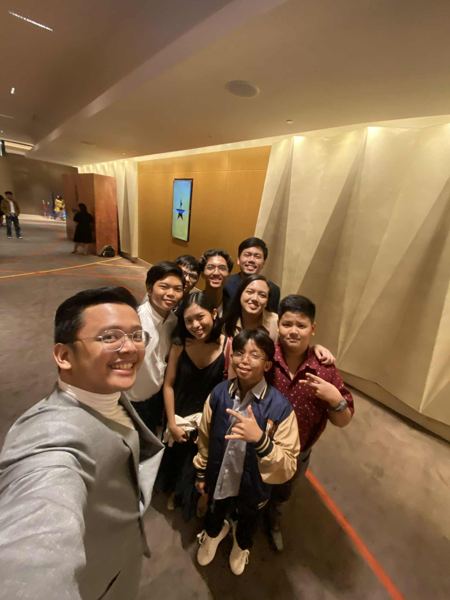

About Me
Hi! My name is Vcpierre Jr. D. Calunsag. I am a first year student at Silliman University and I’m currently taking a Bachelor in Science in Information Technology course in the College of Computer Studies. I was born on March 30, 2007 and I am 18 years old. I was born and raised here in Dumaguete City. I have an older sister named Nicole and a younger brother (dog) named Thor. I am a Christian, a follower and disciple of God and I go to church at Calvary Chapel Dumaguete. My family has been going there since June 2017 and it was one of the best decisions we have ever made. Since then, we have grown so much in the faith and have a personal relationship with God. Some of my hobbies include a variety of sports including badminton, basketball, football, formula 1, and chess. While I don’t play football and I don’t drive f1 cars, I love to watch these sports and am very invested in them. I root for the red teams, Ferrari for f1, and Manchester United for football. It has been a rough year for us, but it will be our year next year! I have supported the Golden State Warriors since 2015 and Stephen Curry is currently my favorite player. I don’t watch badminton. Some of my other hobbies away from sports are music. I play the guitar at Church and sometimes I like to take breaks by singing songs in my room. My favorite song to play on the guitar is Little Things by One Direction. But my favorite artist, through and through has always been Ed Sheeran. He was one of my inspirations for learning guitar. So far, that’s me on the surface. I hope you enjoy looking through the journal.
